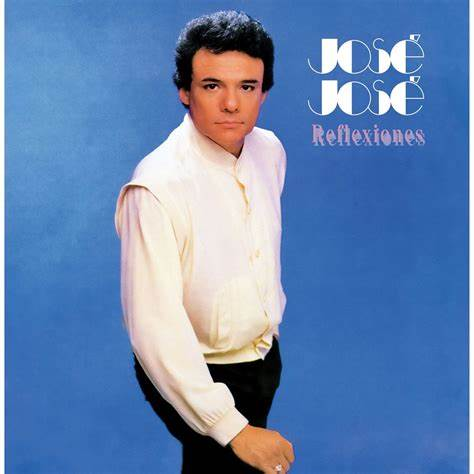

Director: Damien Chazelle
Fecha de estreno: 2016
Género: Musical, drama, romance
Duración: 128 minutos
Protagonistas: Ryan Gosling (Sebastian), Emma Stone (Mia)
6 Premios Óscar, incluyendo:
Mejor directora (Damien Chazelle)
Mejor actriz (Emma Stone)
Mejor banda sonora
7 Globos de Oro (récord)
Nominada a 14 premios de la Academia

1. Por sus más de 30 producciones discográficas, fue merecedor de más de 200 discos de oro y platino gracias a sus exitosas ventas.
2. José José vendió más de 250 millones de discos, con lo que se convirtió en uno de los latinoamericanos más exitosos de la historia. Su música llegó a países no hispanos como Arabia Saudita, Japón, Israel, Egipto y Rusia.
3. Posee el 2DO disco más vendido en la historia de México, Secretos, con más de 7.5 millones de copias..
4. Grabó más de 50 duetos con artistas como Marco Antonio Muñiz, Angélica María, Armando Manzanero, César Costa, Enrique Guzmán, José Feliciano, Roberto Carlos, Vicente Fernández, Pimpinela y Juan Gabriel.
5. De 1968 a 2010 participó en 13 películas, incluida la autobiografía Gavilán o paloma, de 1985.
6. De 1971 a 2018 apareció en 15 producciones televisivas, la mayoría, para Televisa, como El mundo joven joven de José José, Los reyes de la canción, Cantando por un sueño y La fea más bella. La última producción en la que participó fue su autobiografía José José, el príncipe de la canción, para Telemundo en 2018.
7. En Spotify cuenta con 3,7 millones de oyentes mensuales y 1,9 millones de seguidores. En la plataforma hay más de 50 producciones del Príncipe de la canción.
8. Su canal oficial de YouTube tiene 1,13 millones de suscriptores y más de 1.000 millones de reproducciones de sus videos.
1. Récord de conciertos en el Auditorio Nacional Luis Miguel ostenta el récord de más presentaciones en el Auditorio Nacional de Ciudad de México, con un total de 226 conciertos, incluyendo una serie histórica de 16 shows consecutivos en 1996 .
2. Primer artista mexicano con estrella en el Paseo de la Fama de Hollywood En 1996, Luis Miguel se convirtió en el primer músico mexicano en recibir una estrella en el Paseo de la Fama de Hollywood, un reconocimiento a su impacto internacional .
3. Pionero en streaming Es el primer artista mexicano en superar los 5 mil millones de descargas en Spotify y el primero en alcanzar 266 canciones con más de un millón de reproducciones en la plataforma .
4. "Romance" como el álbum más vendido Su álbum "Romance" (1991) ha vendido más de 13 millones de copias a nivel mundial, convirtiéndose en el disco en español más vendido de la historia .
5. Récord de taquilla en su gira "México por Siempre" La gira "México por Siempre" (2018–2019) fue reconocida por Billboard como la gira latina más taquillera de todos los tiempos, con más de 195 conciertos en 99 ciudades y más de 4 millones de espectadores .
6. Premios Grammy y Latin Grammy Luis Miguel ha ganado 6 premios Grammy, incluyendo el Grammy al Mejor Álbum de Pop Latino por "Aries" (1993) y "México por Siempre" (2018) .
7. Récords en YouTube Su video de "Ahora te puedes marchar" ha acumulado más de 668 millones de reproducciones en YouTube, siendo el más visto de su carrera .
8. Reconocimientos en el Festival de Viña del Mar Luis Miguel es el único artista en la historia del Festival de Viña del Mar en recibir 5 Antorchas de Plata, 1 Antorcha de Oro y 1 Gaviota de Plata, destacando su impacto en la música latina .